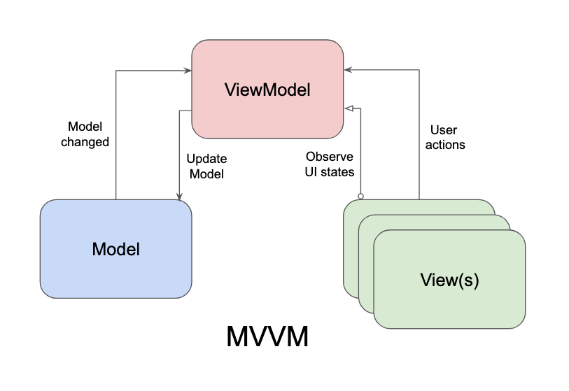
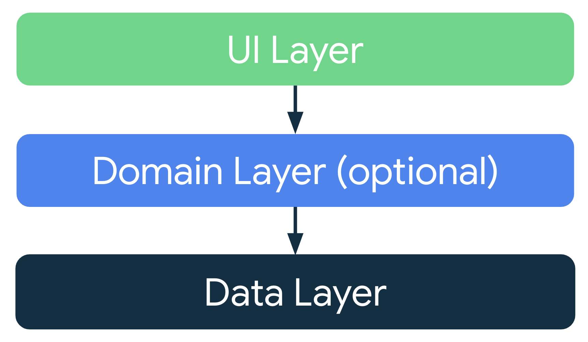

Unit 3.2 The MVVM design pattern
The Model-View-ViewModel (MVVM) is a software architectural pattern that facilitates the separation of the development of the graphical user interface (the view) from the business logic or back-end logic (the model) such that the view is not dependent on any specific model platform. This separation allows for easier management of complex applications, improved testability, and enhanced maintainability.
In Android development, MVVM is commonly used in conjunction with Jetpack libraries such as LiveData, ViewModel, and Data Binding. Here's a brief overview of each component in the MVVM pattern:
- Model: The Model represents the data and business logic of the application. It is responsible for managing the data, whether it comes from a local database, a remote server, or any other source. The Model should be independent of the View and ViewModel, allowing for easy testing and modification.
- View: The View is the user interface of the application. It displays data to the user and captures user input. In Android, the View is typically represented by Activities, Fragments, or custom Views. The View should be as passive as possible, meaning it should not contain any business logic or data manipulation code.
- ViewModel: The ViewModel acts as a bridge between the Model and the View. It is responsible for preparing and managing the data for the View, handling user interactions, and updating the View when the data changes. The ViewModel should not reference the View directly, allowing for better separation of concerns and easier testing.

Recommended app architecture
Each app should have at least two layers:
- UI layer: a layer that displays the app data on the screen but is independent of the data.
- Data layer: a layer that stores, retrieves, and exposes the app data.
You can add another layer, called the domain layer, to simplify and reuse the interactions between the UI and data layers. This layer is optional, but recommended for complex apps.

UI layer
The role of the UI layer, or presentation layer (the View in the MVVM pattern), is to display the application data on the screen. Whenever the data changes due to a user interaction, such as pressing a button, the UI should update to reflect the changes.
The UI layer is made up of the following components:
- UI elements: components that render the data on the screen. You build these elements using Jetpack Compose.
- State holders: components that hold the data, expose it to the UI, and handle the app logic. An example state holder is ViewModel.

ViewModel
The ViewModel component holds and exposes the state the UI consumes. The UI state is application data transformed by ViewModel. ViewModel lets your app follow the architecture principle of separating the UI from the model.
ViewModel stores the app-related data that isn't destroyed when the activity is destroyed and recreated by the Android framework. Unlike the activity instance, ViewModel objects are not destroyed. The app automatically retains ViewModel objects during configuration changes so that the data they hold is immediately available after the recomposition.
To implement ViewModel in your app, extend the ViewModel class, which comes from the architecture components library and stores app data within that class.
1 2 3 | |
To create an instance of your ViewModel class on your composable functions, use the viewModel() function from the androidx.lifecycle.viewmodel.compose package. This function creates a ViewModel the first time the system calls it and retains the same instance during recompositions.
1 2 3 4 5 | |
UI State
The UI is what the user sees, and the UI state is what the app says they should see. The UI is the visual representation of the UI state. Any changes to the UI state immediately are reflected in the UI.
The UI state is usually a data class that holds all the data the UI needs to display. For example, in a weather app, the UI state might include the current temperature, humidity, and weather conditions.
1 2 3 4 5 | |
The ViewModel exposes the UI state to the UI layer using observable data holders, such as StateFlow or LiveData. The UI layer observes these data holders and updates the UI whenever the UI state changes.
1 2 3 4 5 6 7 8 | |
The UI layer collects the UI state from the ViewModel and uses it to render the UI.
1 2 3 4 5 6 7 8 9 10 | |
Data layer
The data layer is responsible for managing the app's data. It handles data storage, retrieval, and manipulation. The data layer can interact with various data sources, such as local databases, remote servers, or in-memory caches.

We will see the data layer in more detail in the next unit.